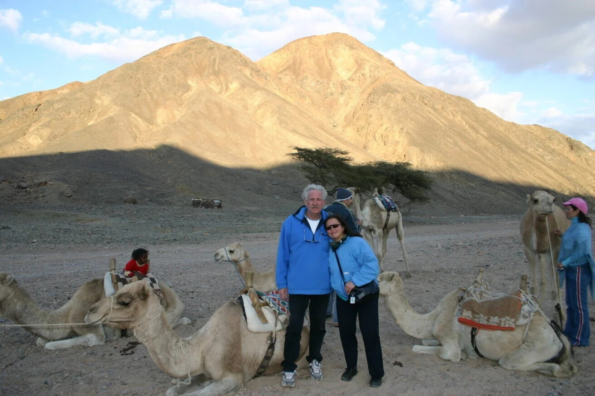
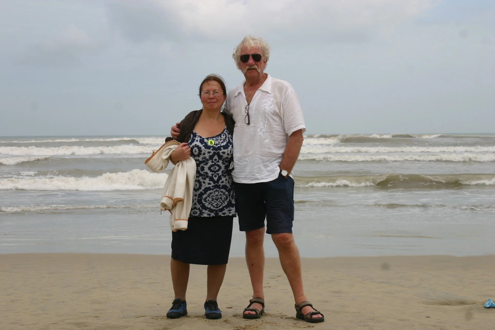
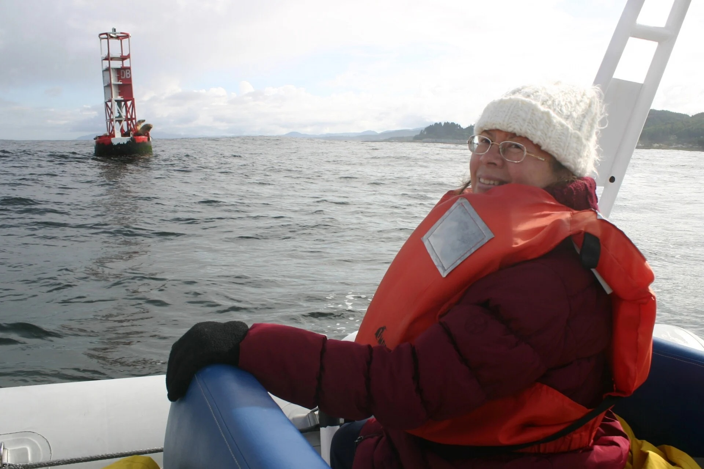
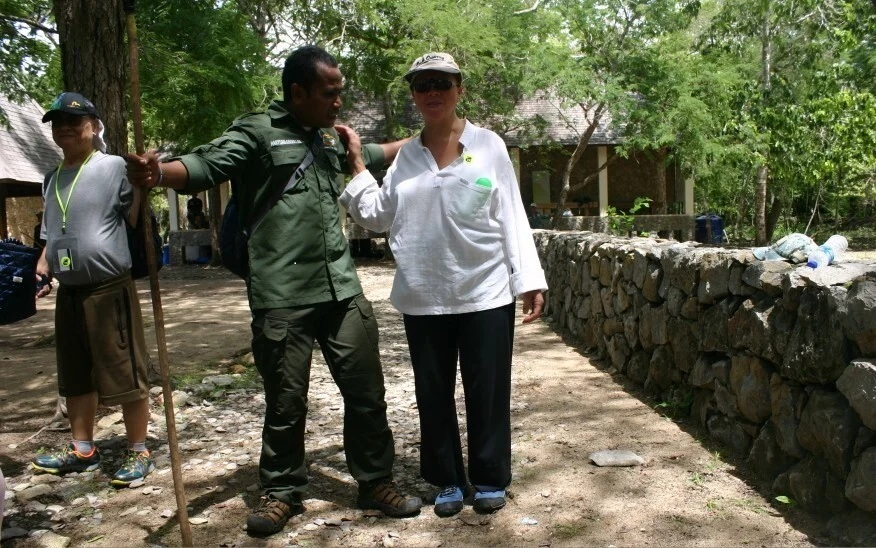
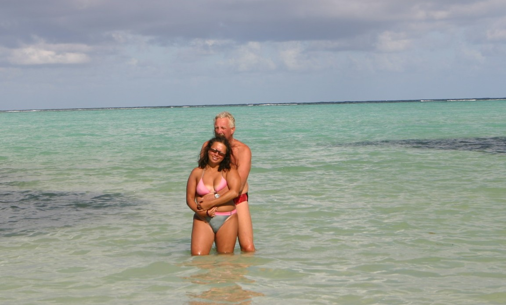
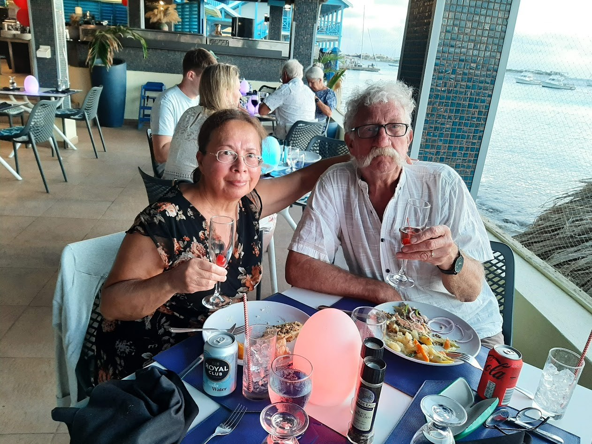
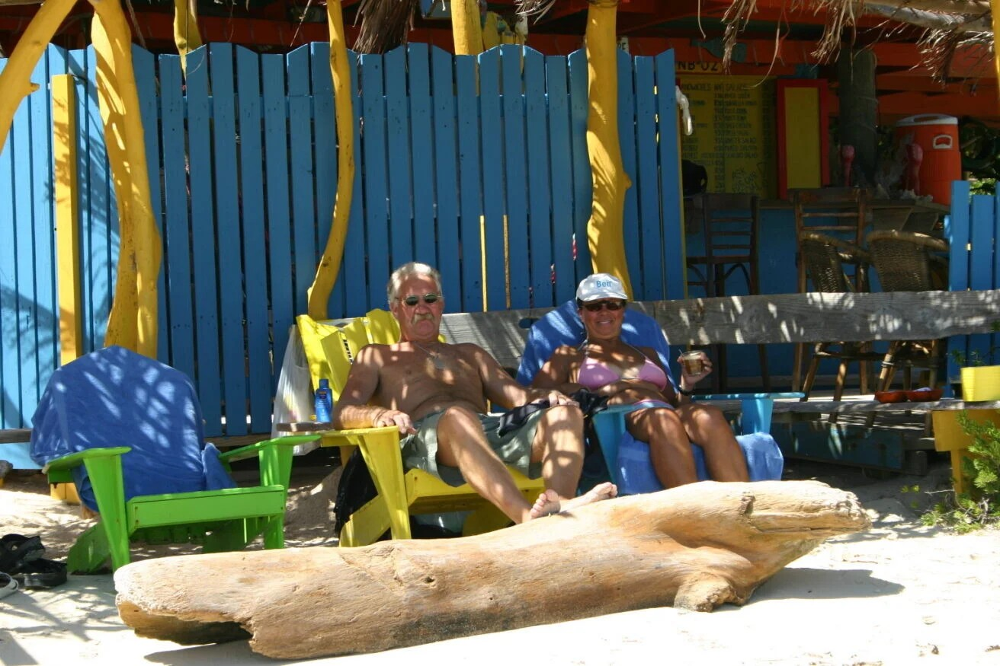
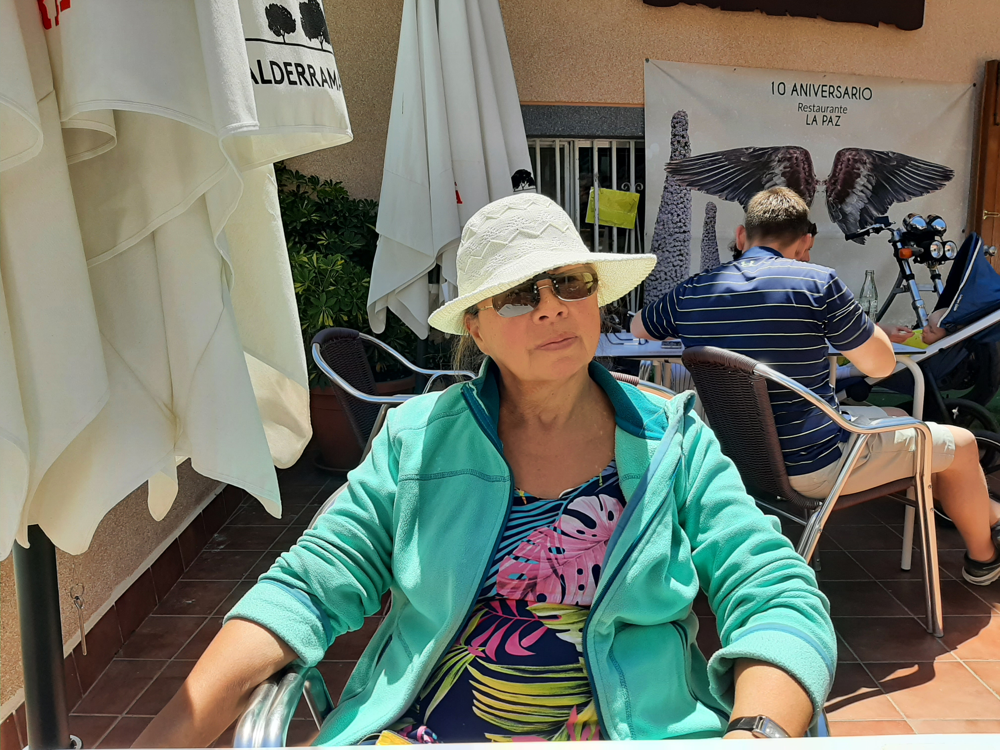
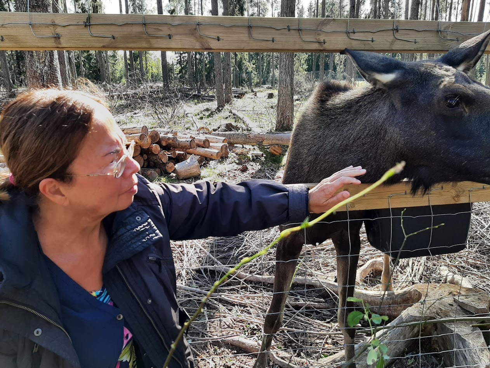
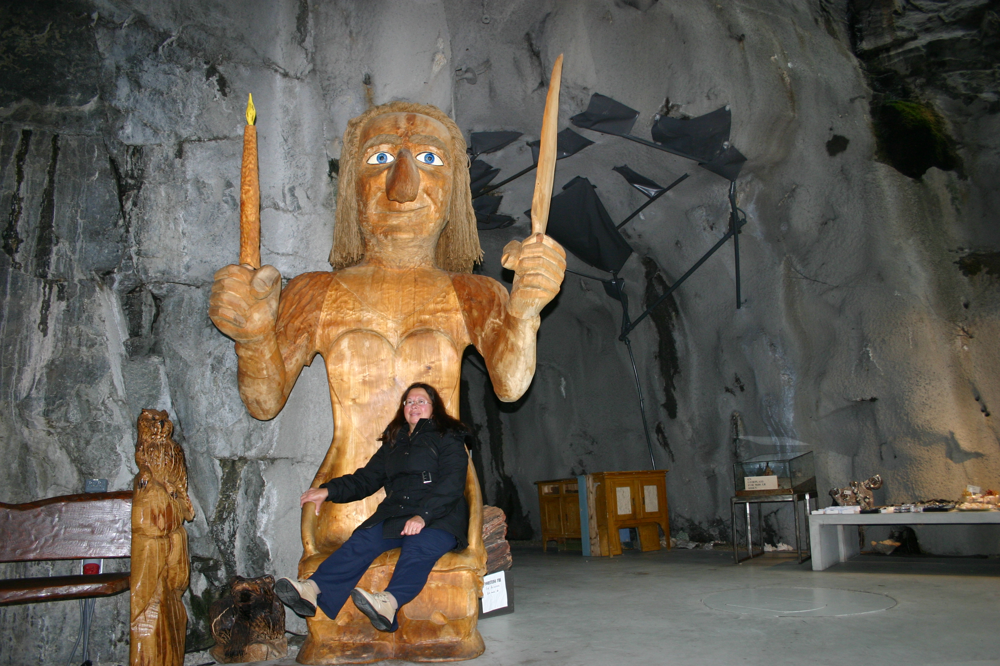

Voor het eerst samen op (duik)reis
Marsa Alam
Egypte 2007

Strandwandeling tijdens de
"Far East"cruise
Vietnam 2016?

Zeeleeuwen safari op een koude dag
Oregon USA 2012

Op het eiland Komodo
National (Varanen) Park
Indonesia 2011

Het begin
Eerste foto op ons reisblog
Bonaire 2006

Valentine`s Dinner
Delphins Beach
Bonaire 2023

Hang Out Beach Bar
Paradijs in Sorobon
Bonaire 2006

Relaxen op een terras in
Costa Adeje
Tenerife 2023

Rendierfarm tijdens een
Scandinavië rondreis
Zweden 2022

In een grot in Noorwegen
tijdens onze eerste cruise
Noorwegen 2009